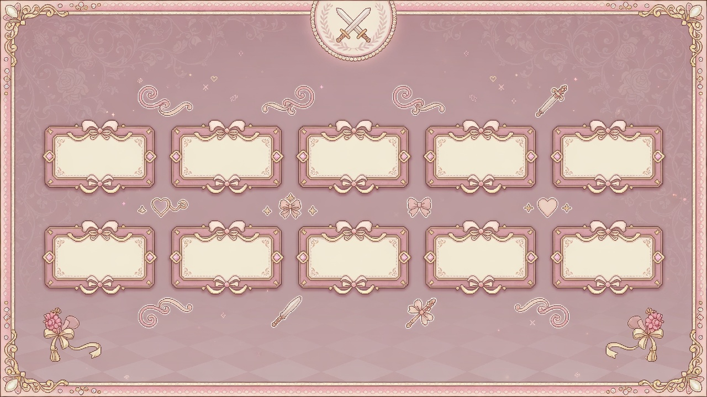

實機


概念與系統圖




新補 NPC 概念


說明：探索裡「方塊 NPC」是缺貼圖 fallback。絲絨／琥珀／浪人／遺孤已進 game/assets/sprites/npcs/，進遊戲後會顯示；其餘道具／路人仍會分批補。
實機截圖 + 概念圖。部分探索 NPC 已補貼圖；世界底圖仍持續補齊。

說明：探索裡「方塊 NPC」是缺貼圖 fallback。絲絨／琥珀／浪人／遺孤已進 game/assets/sprites/npcs/，進遊戲後會顯示；其餘道具／路人仍會分批補。